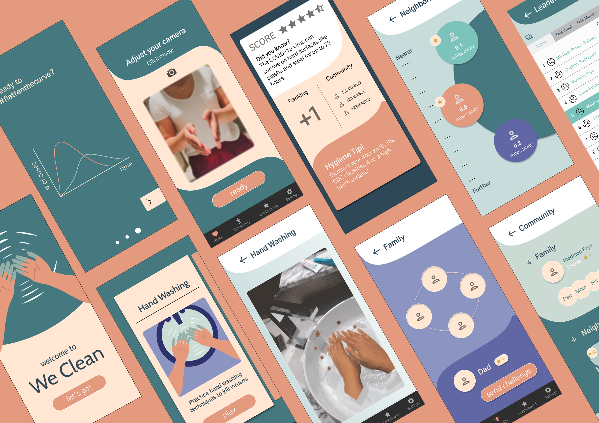

02 WeClean
Tools
Figma • Illustrator • Photoshop • Spark AR • Premiere Pro
Process
Healthcare market and product research • Stakeholder interviews • Lo-fi mockups • Illustration • Hi-fi prototype • Interaction design
Overview
My team and I (Brown, RIT and Cal Poly students) were selected to take part in JHU's COVID-19 Design Challenge. We addressed the lacking education surrounding good hygiene practices to combat the spread of COVID-19, particularly in families and communities where children or youth are interacting with high-risk populations such as the elderly or grandparents.
Through stakeholder interviews, we realized the greatest need/pain point was initial education and follow-through with general hygiene practices.
We Clean encourages better hygiene practices for families, especially where higher-risk grandparents or elderly interact with kids. This app uses AR in a series of everyday scenarios to improve handwashing, surface disinfection, and social distancing. As an incentive to keep playing, ways to engage the family and larger community are built-in.

Users
Current alternatives to our solution are community infographics that do not engage youth through their traditional means of communication. We decided to go straight to our users' content creation source – electronic devices, namely mobile phones, and creating an interactive, engaging app to teach them about these practices.
So far, viral videos such as Dumb Ways to Die and educational TikTok videos about hygiene have been successful at reaching these populations in the past. However, there is no way for our end user to respond and engage with this content.
Additionally, dangerous trends such as the Coronavirus Challenge of licking toilet bowls, are prompting children/youth to worsen their hygiene practices.
Beyond youth, this app engages the full family community, providing a way for families to learn about these practices together. While accessibility ranges from young children to elderly populations, it is designed for the full range of family members as users. Our app provides the solution to that and gamifies engagement so families/communities can use this together.
Stakeholder Interviews
According to multiple stakeholder interviews, the need to disseminate and practice public education on basic hygiene techniques is of utmost importance to prevent community transmission of COVID-19. For example, the Baltimore County Fire Department Chief Firefighter named public education as a top priority.
Moreover, Aditi Rao, a research associate at Johns Hopkins University School of Public Health, named community behavior change through hygiene programs in schools and community spaces as a catalyst for maintaining community health.
Given that schools have been moved online, a virtual learning tool such as We Clean is needed to educate children on hygiene techniques and incentivize behavioral change.
As for the specific techniques that are included in We Clean, Pennsylvania Doctor, Sarah Noorbaksh, emphasized the importance of handwashing compliance, as there is “still not enough handwashing out there”. Thus one of the first skills our app teaches young children is the proper technique for hand washing and rewards them for continuing to do so.
Prototype
Outcome